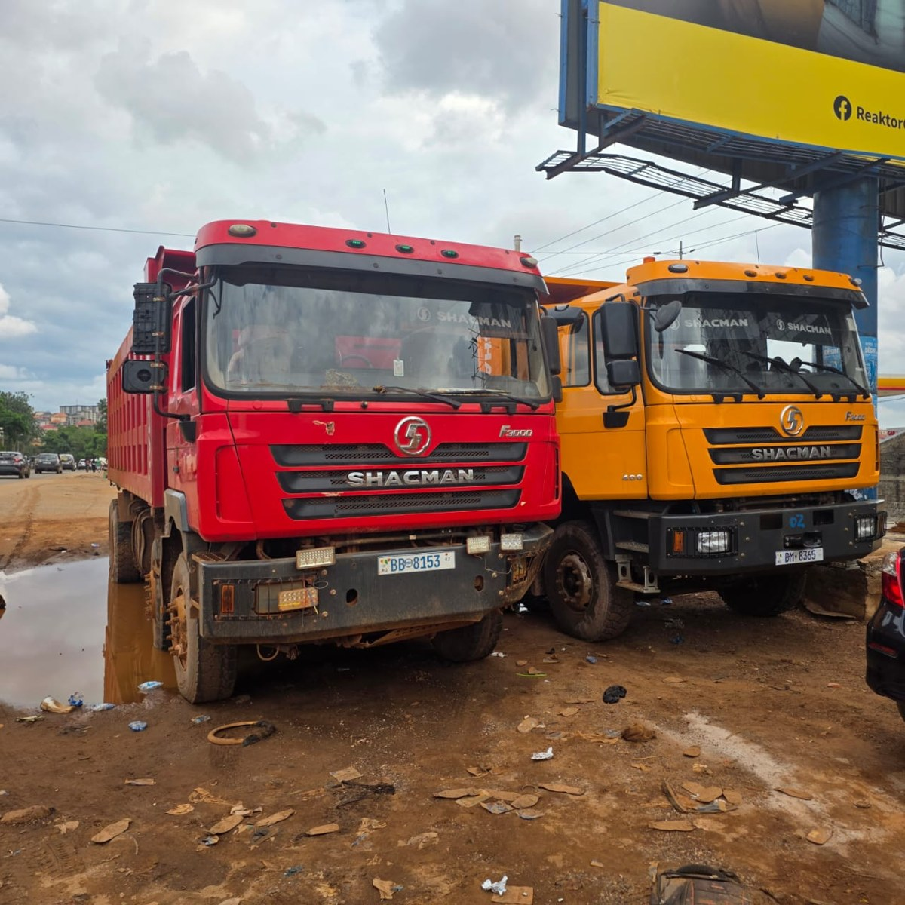

CTIA GUINÉE TRADING
SOCIÉTÉ MULTISECTORIELLE · CONAKRY
Anacarde / Akazu
FR
EN
WhatsApp
☰
Agro
BTP
Immobilier
Commerce & Logistique
Akazu
2021
Conakry
FR · EN
01 · AGRO & COMMERCE
↗
02 · BTP & INFRASTRUCTURES
↗
03 · IMMOBILIER
↗

04 · COMMERCE & LOGISTIQUE
↗
05 · ANACARDE / AKAZU
↗
Aboubacry Person Diallo
+224 626 817 279
xbkinsan33@gmail.com
Thierno Mamadou Bah
+224 661 86 47 42
xbkinsan33@gmail.com
Conakry · 2022
WhatsApp · Téléphone · Email
WhatsApp
×